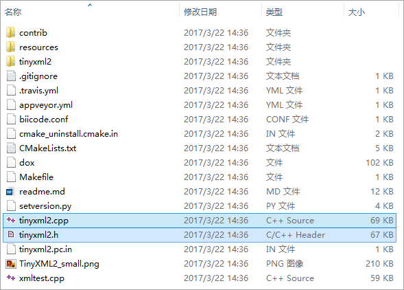
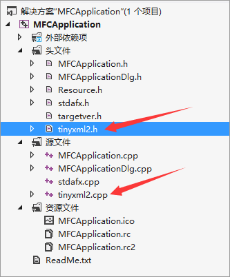

TinyXml2 简介TinyXml 一直是一个非常好用的 Xml 解析工具 , 最新的开源版本 TinyXml2 相对于旧版本的 TinyXml 使用更少的内存 , 更快 , 并且使用更少的内存分配 , 现在是所有开发的重点 , 经过良好的测试 , 是您的最佳选择 , 除非您有维护TinyXML-1代码的要求 ;
TinyXml2 使用类似的 API 到 TinyXml1 和相同的丰富的测试用例 , 但解析器的实现是完全重写的 , 使其更适合在游戏中使用 ;
TinyXml2不需要 STL , 但也降低了所有的 STL 支持 , 所有字符串都是查询并设置为 const char * , 这允许使用内部分配器 , 并保持代码更简单 ;
两个解析器共同点 :
TinyXml2 的优点 :
TinyXML-1 的优点 :
C++ STL 约定 : 流和字符串C++ 中使用 TinyXml2在 C++ 中使用 TinyXml2 , 首先去 Github 官网下载源码 https://github.com/leethomason/tinyxml2 , 下载 zip 文件后 , 解压出来

将解压出来文件里面的 tinyxml2.h 和 tinyxml2.cpp 文件拷贝到工程目录源码文件夹下 , 在项目中添加这两个文件

在代码头文件中引入头文件和命名空间
#include "tinyxml2.h"
using namespace tinyxml2;
在代码中使用 TinyXml2 解析文档
Xml 文档如下
<?xml version="1.0"?>
<Group>
<User>
<Name>John</Name>
<Age>18</Age>
</User>
</Group>
代码中载入并解析改文件
tinyxml2::XMLDocument docXml;
XMLError errXml = docXml.LoadFile("example.xml");
if (XML_SUCCESS == errXml)
{
XMLElement* elmtRoot = docXml.RootElement();
XMLElement *elmtUser = elmtRoot->FirstChildElement("User");
XMLElement *elmtName = elmtUser->FirstChildElement("Name");
if (elmtName)
{
const char* pContent= elmtName->GetText();
printf( "%s", pContent);
}
XMLElement *elmtAge = elmtName->NextSiblingElement();
if (elmtAge)
{
const char* pContent= elmtAge->GetText();
printf( "%s", pContent);
}
}
或者直接解析字符串
tinyxml2::XMLDocument docXml;
char* pXml = "<Item>Hello World</Item>";
XMLError errXml = docXml.Parse(pXml);
if (XML_SUCCESS == errXml)
{
XMLElement* elmtRoot = docXml.RootElement();
if (elmtRoot)
{
const char* pContent= elmtRoot->GetText();
printf( "%s", pContent);
}
}
注意 : 如果命名空间冲突的话 , 可能会导致
XMLDocument对象不明确 , 使用tinyxml2::XMLDocument来使用